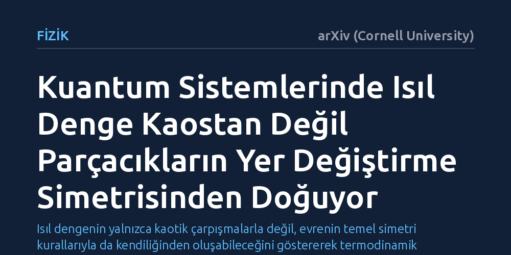

FIZIK · arXiv (Cornell University) · 2026-09-08
Araştırmacılar, kapalı kuantum sistemlerindeki parçaların ısıl dengeye ulaşması için dinamik kaosun zorunlu olup olmadığını inceledi. Sonlu de Finetti teoremlerini kullanan çalışma, termalleşmenin kaos yerine doğrudan sistemin iç simetrisi sayesinde kendiliğinden gerçekleşebileceğini ortaya koydu.
Isıl dengenin yalnızca kaotik çarpışmalarla değil, evrenin temel simetri kurallarıyla da kendiliğinden oluşabileceğini göstererek termodinamik anlayışımızı sadeleştiriyor.

Günlük hayatta sıcak bir fincan çayın odanın sıcaklığıyla dengelenmesini anlamak kolaydır; çay molekülleri havadaki moleküllerle çarpışır ve enerji çevreye dağılır. Ancak tamamen yalıtılmış, dış dünyayla hiçbir madde ya da enerji alışverişi olmayan kapalı bir kuantum sistemini ele aldığımızda fiziksel tablo karmaşıklaşır. Fizikçiler uzun süredir, böyle kapalı bir sistemin içindeki küçük bir parçanın nasıl olup da sanki dışarıdan bir ısı banyosuna bağlıymış gibi ısıl dengeye ulaştığını anlamaya çalışmaktadır.
Geleneksel fizik anlayışında bu termalleşme süreci; sistemin dinamik bir kaos sergilemesi, kuantum durumlarının faz uzayını rastgele taraması veya enerjinin istatistiksel olarak her yere eşit dağılması gibi karmaşık kabullerle açıklanır. Ancak bu yaklaşımlar, ısıl dengenin doğanın temel simetrilerinden kaynaklanan kaçınılmaz bir özellik mi yoksa sadece kaotik çarpışmaların getirdiği istatistiksel bir tesadüf mü olduğu sorusunu açıkta bırakıyordu.
Araştırmacılar Uttam Singh ve Nicolas J. Cerf, bu temel soruya yanıt ararken deneysel bir laboratuvar düzeneği kurmak yerine kuantum bilgi kuramının matematiksel araçlarına başvurdu. İncelemenin merkezinde, olasılık kuramından kuantum mekaniğine uyarlanan sonlu de Finetti teoremleri yer alıyor. Bu teoremler, çok sayıda parçadan oluşan ve parçacıkların sırası değiştirildiğinde genel yapısı bozulmayan simetrik sistemlerin matematiksel sınırlarını tarif eder.
Yazarlar, zaman içindeki dinamik çarpışmaları tek tek simüle etmek yerine, sistemin sahip olduğu bu yer değiştirme simetrisini analitik olarak modellediler. De Finetti yaklaşımı sayesinde, devasa bir kuantum sisteminin içinden rastgele seçilen küçük bir alt kümenin, sistemin geri kalanıyla olan kuantum ilişkisi ve denge durumu doğrudan matematiksel kesinlikle türetilebildi.
Analizin ortaya koyduğu temel bulgu, kuantum alt sistemlerinin ısıl dengeye gelmesi için sisteme yön veren kaotik dinamiklere veya karmaşık enerji dağılımlarına muhtaç olunmadığıdır. İncelenen modelde, parçacıkların birbirinin yerine geçebilme simetrisi, küçük alt sistemleri kendiliğinden ve kaçınılmaz olarak termal bir denge durumuna sürüklemektedir.
Sistemdeki toplam parça sayısı arttıkça, bu simetri kuralı alt sistemlerin birbirinden bağımsız ve özdeş ısıl hallere bürünmesini matematiksel bir zorunluluk haline getirir. Başka bir deyişle, kapalı sistemin genel durumu ne kadar karmaşık olursa olsun, parçacıklar arasındaki yer değiştirme simetrisi tek başına klasik bir termal banyo etkisi yaratmaya yetmektedir.
Bu teorik mekanizma, termodinamik yasalarının kökenine dair bakış açımızı dönüştürme potansiyeli taşıyor. Isıl dengenin ortaya çıkışını mikroskobik kaosa veya istatistiksel tesadüflere bağlayan yaygın kabul yerine, termalleşmeyi evrendeki temel simetrilerin doğal ve matematiksel bir sonucu olarak görmemize imkan tanıyor.
Çalışma henüz laboratuvar ortamındaki kuantum bilgisayarlarında veya atomik gazlarda doğrudan doğrulanmış bir deney değildir. Ancak ilerleyen yıllarda kuantum simülatörleri geliştikçe, simetri kaynaklı bu termalleşmenin yalıtılmış kuantum belleklerin korunmasında ve kuantum teknolojilerinin tasarımında yeni kapılar aralaması beklenmektedir.